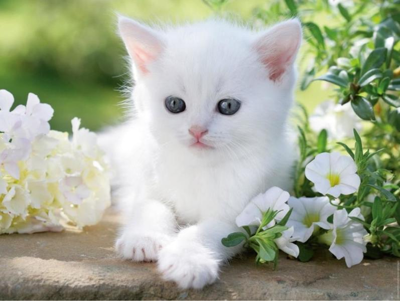
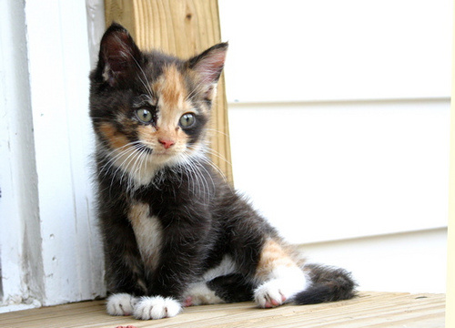
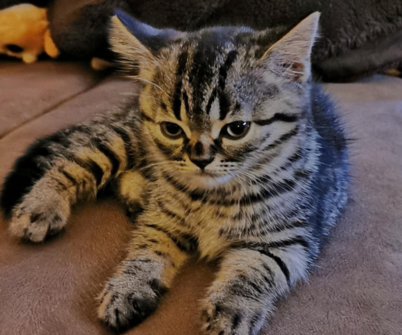
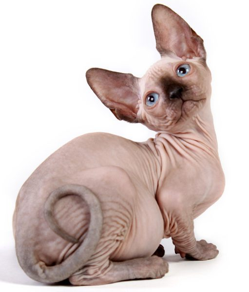
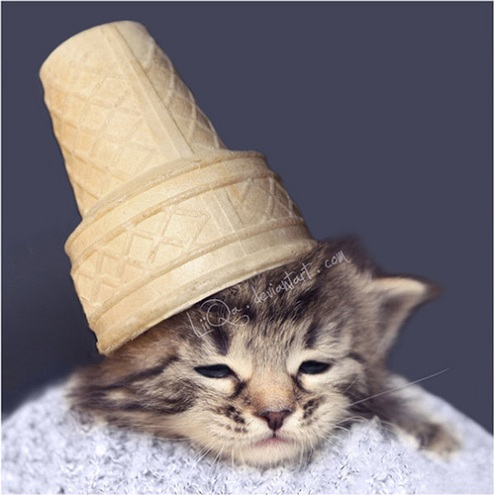

Az első nyávogó nem más, mint Hópihe.
 Hópihe egy lány és nagyon szeret játszani.
A második macskacicó a kedves és barátságos Micike.
 Neki lételeme a pihenés és a gazdi szeretgetése.
Harmadik jelöltünk, a kissé mogorva, ámbár annál hűségesebb Muszkly.
 Ez a macsek sokszor vágyik egyedüllétre, de még egy kutyának is nekimegy a gazdija biztonságának az érdekében.
Füleshangya nevű cicusunk pedig nagy meglepetés lehet mindenki számára, mert ő egy kopasz macska.
 Füleshangya, másnéven Füli igényli a gyakori fürdetést a bőre miatt.
Utolsó négylábúnk pedig nem más, mint Marcika, a kiscica aki szereti imádja a fagyit.
 Marcika a kedvenc cicám mind közül!
Köszönöm a figyelmet, ha szeretnétek felvenni velem a kapcsolatot kattintsatok ide.